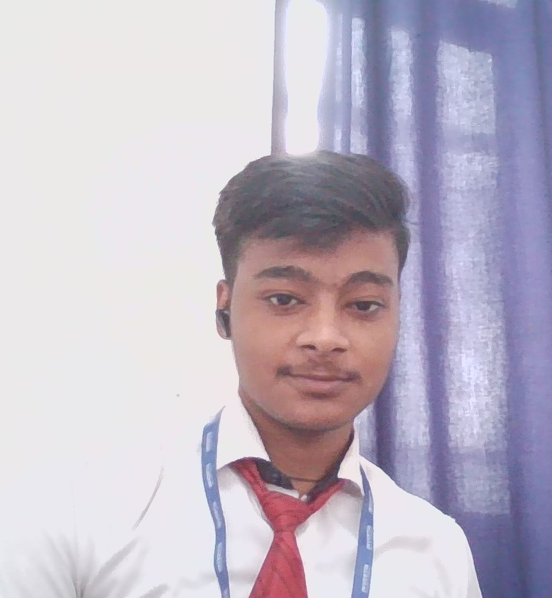

|

|
PROFILE
"I am a BTech student with a knack for coding. Passionate about problem-solving and eager to contribute in a dynamic environment."
|
CONTACT ME
Phone: 7007909066
LinkedIn: linkedin.com/in/rishabhtripathi7007
Email: rishabhtripathi8858@gmail.com
|
HOBBIES
In my spare time, I enjoy playing badminton and chess because these sports keep me fit, challenge my physical limits and strengthen my team working skills.
|
|
RISHABH TRIPATHI
College Student
EDUCATION
- Bachelor of Technology (BTech) in Invertis University, Bareilly (Expected Graduation Date: June, 2026)
- Secondary Education: NAVALS NATIONAL ACADEMY, Percentage: 82.6%
- High School: NAVALS NATIONAL ACADEMY, Percentage: 79.9%
ACHIEVEMENTS
- Deputy Head Boy at Secondary School
- Runner-up of RoboRumble at Invertis University
- Developed and deployed a mobile application
COMPUTER SKILLS
- C++
- HTML, CSS, JavaScript
- C programming language
- Problem Solving (DSA)
- IOT
- Machine Learning
OTHER SKILLS
- Microsoft Office
- Creative Thinking
- Problem Solving
- Video Editing
|